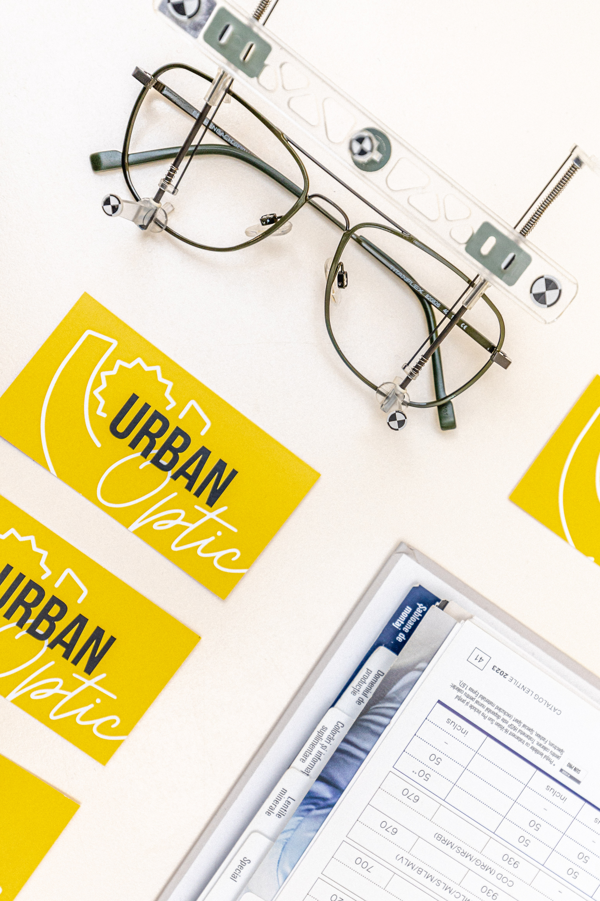
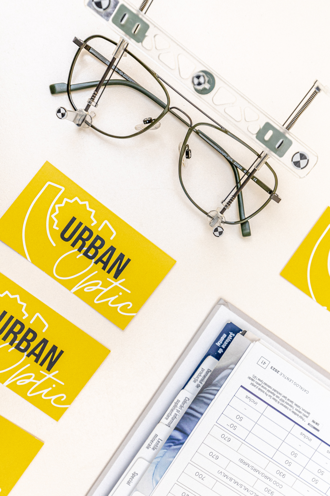

Termeni și condiții | GDPR
 

Ultima actualizare 30.05.2023
Conditii Generale pentru utilizarea site-ului urbanoptic.ro
ACCEPTAREA CONDITIILOR
Prin accesarea acestui site web si/sau a oricarei pagini a acestuia sunteti de acord cu aceste conditii de utilizare. Daca nu sunteti de acord cu acesti termeni si conditii de utilizare, nu accesati acest site.
DESCRIEREA SERVICIILOR
Siteul nostru va pune la dispozitie informatiile din acest site web in scop informativ general si nu garanteaza de exactitatea lor la un moment dat, desi se va incerca pe cat posibil ca la publicarea lor pe site toate informatiile sa fie exacte.
INTRODUCERE
Prezentele Conditii Generale definesc conditiile de utilizare a site-ului urbanoptic.ro de catre potentialii vizitatori sau clienti. Accesând si navigând pe acest site, acceptati termenii de utilizare descrisi în continuare.
DREPTURILE ASUPRA CONTINUTULUI SITE-ULUI
urbanoptic.ro nu va transfera titlul de proprietate asupra aplicatiilor software.
urbanoptic.ro detine drepturi complete si depline asupra titlului de proprietate si prin aceasta toate drepturile de autor si cele brevetate. Nu aveti dreptul sa redistribuiti, vindeti, decompilati, dezasamblati aplicatia software într-o forma perceptibila de catre oameni.
Toate informatiile, produsele sau aplicatiile continute în acest site sunt proprietatea urbanoptic.ro, care îsi rezerva dreptul de a modifica continutul si/sau structura site-ului în orice moment si fara nici o informare prealabila.
Întregul continut al site-ului urbanoptic.ro este protejat prin legea drepturilor de autor, toate drepturile fiind rezervate. Toate drepturile referitoare la pagini, continutul si prezentarea site-ului sunt detinute de urbanoptic.ro. Este interzisa copierea, modificarea, afisarea, distribuirea, transmiterea, publicarea, comercializarea, licentierea, crearea unor materiale derivate sau utilizarea continutului site-ului în orice scop fara confirmarea scrisa din partea urbanoptic.ro.
Accesul si utilizarea paginii urbanoptic.ro sunt gratuite si au scopul de a veni in ajutorul utilizatorilor pentru a gasi informatiile necesare în cel mai usor si rapid mod posibil, conform cerintelor fiecaruia.
Informatiile prezente pe urbanoptic.ro sunt de interes general si sunt puse la dispozitia utilizatorilor în mod gratuit. Prin termenul „utilizator” al acestei pagini se întelege orice persoana fizica sau juridica care va accesa pagina. Puteti copia si tipari continutul paginii urbanoptic.ro pentru folosinta dumneavoastra personala, fara intentii comerciale. În orice alte situatii, continutul urbanoptic.ro nu poate fi reprodus, modificat sau exploatat fara consimtamântul explicit al reprezentantilor urbanoptic.ro.
NEANGAJAREA RASPUNDERII
Continutul informatiilor se refera la descrierea într-un anumit grad de detaliere a activitatilor, produselor si serviciilorurbanoptic.ro. urbanoptic.ro nu va acorda nici o garantie referitoare la:
– evitarea utilizarii anevoioase sau întreruperii în utilizare a site-ului;
– neafectarea în sens negativ a altor sisteme prin utilizarea site-ului;
– inexistenta pe site-ul pus la dispozitie a virusilor sau alte componente care ar putea dauna utilizatorilor.
Astfel, urbanoptic.ro nu poate fi responsabila pentru nici un fel de daune directe sau indirecte produse prin utilizarea site-ului sau.
Toate informatiile prezentate pe site cu privire la produsele urbanoptic.ro, preturi, informatii, campanii si promotii de marketing, aspecte tehnice, sunt prezentate cu titlu informativ. Nimic din continutul site-ului urbanoptic.ro nu poate constitui o oferta ferma de a contracta si nu poate angaja raspunderea Amigio în lipsa unor acorduri ulterioare.
Continutul paginii web urbanoptic.ro, a informatiilor si a altor materiale prezentate de Comunitatea urbanoptic.ro nu reprezinta o consultatie juridica în sensul Legii nr. 51/1995.
GDPR este un set de reguli bazat pe principii complexe, care este deschis la interpretare si cotine, de asemenea, numeroase domenii în care statele membre sunt invitate sa intervina. În prezent exista foarte putine îndrumari cu privire la implementarea GDPR si este posibil ca Autoritatile de Supraveghere sa aiba puncte de vedere diferite fata de cele exprimate în acest ?ablon. În ciuda eforturilor noastre de a oferi cele mai bune servicii, nu putem anticipa cu exactitate modul în care Autoritatea de Supraveghere sau instan?ele de judecata vor interpreta Regulamentul.
urbanoptic.ro nu face nicio declaratie, promisiune sau garantie cu privire la exactitatea, exhaustivitatea sau caracterul adecvat al prezentului continut, al îndrumarilor si a consultantei, nu îsi asuma nicio obligatie de rezultat sau diligenta fata de nicio persoana, exclud în mod expres si neaga raspunderea pentru orice cost, pierdere sau daunele suferite ca urmare a utilizarii continutului.
OBIECTIVUL CONTINUTULUI SITE-ULUI
Obiectivul continutului site-ului este de a transmite informatii actualizate si exacte.
urbanoptic.ro nu poate garanta ca prezentele pagini nu contin erori, si asigura ca va depune toate diligentele pentru realizarea unei informari corecte si remedierea eventualelor erori.
Orice persoana care doreste sa-si procure unul din serviciile sau produsele prezentate în site este rugata sa contacteze urbanoptic.ro prin unul din mijloacele afisate în pagina de Contact a site-ului, pentru a se informa atât asupra disponibilitatii serviciului sau produsului în cauza cât si asupra conditiilor contractuale, tarifelor si informatiilor tehnice sau de alta natura.
INFORMATII PERSONALE
Când prin intermediul prezentului site va sunt solicitate informatii, aceasta are ca scop identificarea dumneavoastra sau posibilitatea de a va contacta. Acest lucru este cu atât mai necesar în cazul folosirii aplicatiilor disponibile pe site.
Natura informatiilor solicitate se refera în special la date personale (nume, adresa, numere de telefon), adresa de e-mail, modul în care sunt utilizate sau intentioneaza sa fie utilizate produsele si/sau serviciile urbanoptic.ro, dar poate include si alte informatii aflate în strânsa legatura cu utilizarea serviciilor si/sau produselor solicitate.
Cu scopul de a raspunde mai bine nevoilor si întrebarilor utilizatorilor site-ului, informatiile solicitate prin intermediul acestui site vor face obiectul unei stocari si prelucrari electronice.
LEGATURA CU ALTE SITE-URI
Prezentul site poate contine legaturi sau trimiteri catre alte site-uri considerate de urbanoptic.ro utile în legatura cu continutul site-ului sau si care nu se afla sub controlul sau îndrumarea sa. În cazul utilizarii acestor legaturi sau trimiteri se vor aplica conditiile generale de utilizare corespunzatoare acelor site-uri.
urbanoptic.ro nu poate garanta/controla actualitatea/exactitatea informatiilor prezente pe site-urile unor terti, la care se face trimitere de pe site-ul sau.
INFORMATIILE OFERITE PRIN INTERMEDIUL SITE-ULUI
Orice persoana care viziteaza site-ul urbanoptic.ro si care ofera date sau informatii cu caracter personal prin intermediul acestui site îsi manifesta acordul în mod expres si neechivoc pentru urmatoarele: prelucrarea acestor date si informatii personale de catreurbanoptic.ro; transmiterii de materiale promotionale specifice operatiunilor de marketing direct; solutionarea de catre urbanoptic.ro a cererilor, întrebarilor si reclamatiilor adresate (a se vedea pagina Contact din site); alte activitati întreprinse de urbanoptic.ro si permise de lege, ce nu fac obiectul unei aprobari din partea destinatarului.
urbanoptic.ro va pastra confidentialitatea acestor informatii.
Utilizarea în continuare a acestui site constituie acordul expres si neechivoc al dumneavoastra în conformitate cu prevederile legii 677/2001 si directivelor GDPR pentru protectia persoanelor cu privire la prelucrarea datelor cu caracter personal si libera circulatie a acestor date.
Pentru orice nelamurire în legatura cu exercitarea drepturilor dumneavoastra referitoare la utilizarea site-ului si la protectia utilizarii va rugam sa ne contactati prin intermediul sectiunii Contact din site.